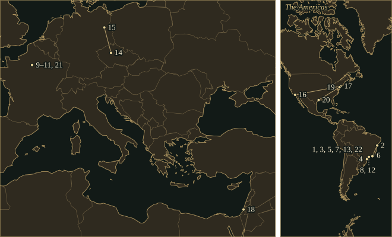
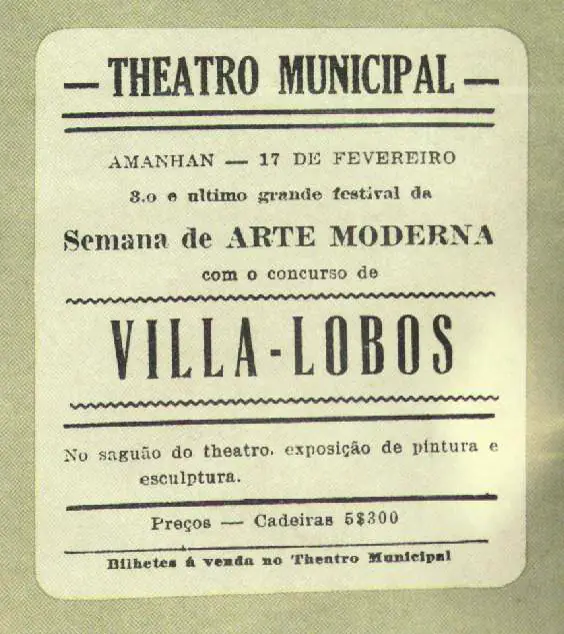
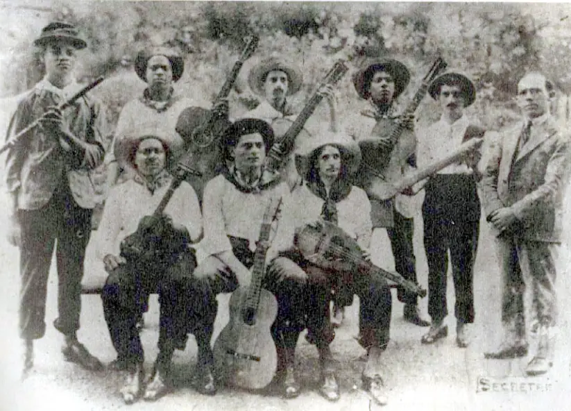
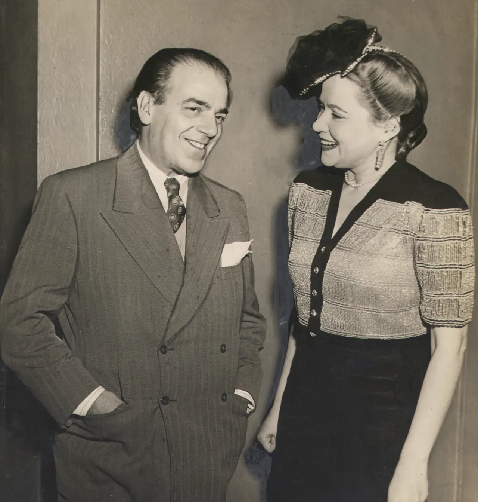

HeitorVilla-Lobos
Brazilian composer and conductor, born in Rio de Janeiro, who wrote the Chôros, the Bachianas Brasileiras and a body of music for guitar.
- Trained
- Cello and ear training with his father, Raul; harmony and cello as a night student at the Instituto Nacional de Música, Rio
- Posts
- Cellist in Rio orchestras, cafés and cinemas · head of the Superintendência de Educação Musical e Artística, Rio, from 1932 · president of the Academia Brasileira de Música, 1945–59
- Turning points
- Semana de Arte Moderna, 1922 · Paris, 1923–24 and 1927–30 · Bachianas Brasileiras, 1930–45 · first visit to the United States, 1944
- Output
- Chôros numbered 1 to 14, nine Bachianas Brasileiras, twelve symphonies, string quartets, concertos, guitar and piano music
Life
Heitor Villa-Lobos was born in Rio de Janeiro on 5 March 1887. His father, Raul, was an official at the National Library and an amateur cellist who gave him ear training and cello lessons, at first on a viola. Raul died of smallpox in 1899 and the family had little money; his mother, Noemia, took in laundry. The boy, called Tuhú at home, was put into classes meant to prepare him for medicine, missed school to spend nights with the chorões, and went to live with an aunt who played preludes and fugues from Bach’s Well-Tempered Clavier on the piano.
He took a night course at the Instituto Nacional de Música and earned his living as a cellist in orchestras, cafés and cinemas. From about 1905 to 1911 he was often away from Rio, in the north and north-east of Brazil, and paid for the first trip by selling rare books from his father’s library. He later described these years as a time of collecting folk melodies; David Appleby found little evidence that he collected them systematically. The manuscript of a guitar mazurka, Simples, dated 12 August 1911, carries an inscription that Orlando Fraga translates: “This is a study; I don’t consider it as serious music.”
1913–23Rio de Janeiro and São Paulo
He married the pianist Lucília Guimarães on 12 November 1913 and gave his first concerts in 1915. Darius Milhaud arrived at the French embassy in 1917 and encouraged him to find his own way. The pianist Arthur Rubinstein, whom he met in 1918, played his music on tours and spoke for him to wealthy Brazilians.
The Semana de Arte Moderna filled the Theatro Municipal in São Paulo on 13, 15 and 17 February 1922 with lectures, poetry and music. Villa-Lobos, then thirty-four, supplied about twenty pieces over the three evenings and conducted two of the largest, the Quarteto simbólico and the Danças características africanas. He appeared in a tailcoat and slippers; an article by Sesc São Paulo, citing historical research, attributes the slippers to an attack of gout.
1923–30Paris
Rubinstein’s recommendation helped him obtain funds from the Guinle family for a first stay in Paris in 1923. His Nonet, for winds, harp, celesta, piano, a large percussion section and chorus, was first performed there on 30 May 1924. He went back in 1927 and stayed until 1930. At the Salle Gaveau on 24 October 1927 the Concerts Colonne orchestra gave the first performance of Chôros No. 8, for two pianos and orchestra. In November 1929 the critic Mário Pedrosa wrote in La Revue musicale that Villa-Lobos had “the artless and total sincerity of a mountain torrent.”
Segovia asked him for a study and received twelve, the Études of 1928–29, each dedicated to him in the published edition. Villa-Lobos’s own writing for the guitar went back to the first years of the century and continued through the Suite populaire brésilienne, the Études and the five Préludes of 1940.
1920–29The Chôros
The Chôros, numbered 1 to 14, take their name from the street musicians of Rio. No. 1 is for solo guitar and is dedicated to Ernesto Nazareth. No. 2 is a duet for flute and clarinet, the two instruments favoured by the chorões. No. 3 is for male chorus and winds, No. 10 for orchestra, mixed chorus and a battery of Brazilian percussion, and No. 11, for piano and orchestra, lasts more than an hour. Villa-Lobos called No. 11 “strong, big and robust, like an elephant.”
Chôros No. 3 uses melodies of the Pareci people recorded by the anthropologist Edgar Roquette-Pinto. Manuel Bandeira reviewed a performance conducted by the composer and judged its unity doubtful, in part because of the chorus’s closing shout of “Brazil!”: “Villa needed a word – any word – ending in ‘il’.”
Chôros No. 10, first performed in Rio on 11 November 1926, includes the melody of Yará, a schottische by Anacleto de Medeiros that the poet Catulo da Paixão Cearense had turned into a song, Rasga o coração. Catulo’s heirs sued over the use of his words. Villa-Lobos replaced them with a vocalise, and the second edition of the score dropped both the words and the subtitle.
1930–45Vargas and the Bachianas
Villa-Lobos went to Brazil in 1930 to conduct, intending to go back to Paris. The revolution of October brought Getúlio Vargas to power and barred payments abroad; Villa-Lobos could not pay the rent on his Paris apartment and was evicted in his absence, together with his belongings. Among them were the autograph scores of Chôros Nos. 13 and 14, which are lost; a short-score fragment of No. 13 survives. In 1932 the Federal District of Rio put him at the head of a new department for music education, and in the same decade he presented the Brazilian premieres of Beethoven’s Missa solemnis and Bach’s B minor Mass. The mass choral concerts known as canto orfeônico, held in football stadiums with the government’s support, drew more than thirty thousand performers.
In April 1936 he flew to Europe on the Graf Hindenburg as Brazil’s delegate to the Prague congress on music education, and went on to Berlin. Eduardo Sato reads the trip as the start of a phase that culminated in the Bachianas Brasileiras. The nine works date from 1930 to 1945. Most movements have two titles, one from Bach’s world (Prelúdio, Fuga, Toccata, Ária) and one Brazilian. Simon Wright quotes the composer’s description of Bach as “a universal folkloric source”.
The Ária of No. 5, for soprano and cellos, was written in 1938 to words by Ruth Valadares Corrêa, who sang it at the first performance in Rio on 25 March 1939 with the composer conducting. Bidú Sayão sang it at the World’s Fair Hall in New York on 4 May 1939, the first performance in the United States, and later recorded it for Columbia with Villa-Lobos conducting. The second movement, the Dansa (Martelo), to verses by Manuel Bandeira about the birds of the north-eastern sertão, was added in 1945.
1944–59The last years
Villa-Lobos first visited the United States in 1944. A New Yorker profile in the issue of 10 February 1945 found him at the Waldorf, speaking French, credited with some fifteen hundred works and conducting the Philharmonic that week. He founded the Academia Brasileira de Música in 1945 and presided over it until his death. In 1948 he was diagnosed with bladder cancer; he continued to travel.
Late commissions included concertos for harp, cello and guitar. The Guitar Concerto, written for Segovia in 1951, was first played in Houston on 6 February 1956 with the composer conducting; Segovia had refused to play it until Villa-Lobos added a cadenza. In his review of the concert the Houston Post critic Hubert Roussel wrote that the composer “bears a striking resemblance to the contemporary sketches of the later Beethoven.” In 1959 United Artists issued Forest of the Amazon, excerpts from his score for the MGM film Green Mansions, with Sayão and the Symphony of the Air under the composer’s baton. He died in Rio de Janeiro on 17 November 1959.
Places

All 22 places, with sources
- Rio de Janeiro · 1887-03-05 · born
Born to Raul Villa-Lobos, an official at the National Library and an amateur cellist, and Noemia Villa-Lobos. The coordinates are those of the city; they do not mark a particular house.
Academia Brasileira de Música: Heitor Villa-Lobos, biography · David P. Appleby, “Villa-Lobos, Heitor”, Encyclopedia of Latin American History and Culture
- Salvador, Bahia · 1905–1911 · travelled (disputed)
Later accounts place him in Bahia during years of travel in the north and north-east, and say that he first heard music by Debussy there. David Appleby found little evidence that the trips were systematic folk-music collecting. Dates and route are not documented; the point marks the state capital.
David P. Appleby, “Villa-Lobos, Heitor”, Encyclopedia of Latin American History and Culture · Death of Villa-Lobos, EBSCO Research Starters (absent from Rio 1905–1911; Bahia and Debussy) · Orlando Fraga, Heitor Villa-Lobos: A Survey of His Guitar Music, Electronic Musicological Review 1.1 (1996)
- Rio de Janeiro: Instituto Nacional de Música · 1907 · studied
Enrolled for a few months in the night course, studying cello with Max Breno Niederberger and harmony with Frederico Nascimento, then left. The record gives the year but not the months.
Academia Brasileira de Música: Heitor Villa-Lobos, biography · Death of Villa-Lobos, EBSCO Research Starters
- Paranaguá · 1908-01-26 · premiere
Recouli, for flute, clarinet and strings, was first performed at the Teatro Santa Isabel with Villa-Lobos conducting. Orlando Fraga adds that he had worked in a match factory in the town, but gives no dates. Recouli (W019).
IMSLP: List of works by Heitor Villa-Lobos (W019) · Orlando Fraga, Heitor Villa-Lobos: A Survey of His Guitar Music, Electronic Musicological Review 1.1 (1996)
- Rio de Janeiro · 1911–1923 · lived
He was back in Rio by 1911. On 12 November 1913 he married the pianist Lucília Guimarães and moved into her family’s house. He earned a living as a cellist and composed at night.
David P. Appleby, “Villa-Lobos, Heitor”, Encyclopedia of Latin American History and Culture · Death of Villa-Lobos, EBSCO Research Starters
- Nova Friburgo · 1915 · worked
The first concert of his own music, in a town in the state of Rio de Janeiro, before the Rio programme of November 1915.
David P. Appleby, “Villa-Lobos, Heitor”, Encyclopedia of Latin American History and Culture
- Rio de Janeiro: Salão Nobre · 1915-11-13 · premiere
A programme in the Salão Nobre (IMSLP: the hall of the Associação dos Empregados do Comércio; Fraga: the Jornal do Comércio hall) that included the First Piano Trio, the Violin Sonata No. 2 and songs. The coordinates mark the city. Piano Trio No. 1 (W042).
IMSLP: List of works by Heitor Villa-Lobos (W042) · Orlando Fraga, Heitor Villa-Lobos: A Survey of His Guitar Music, Electronic Musicological Review 1.1 (1996)
- Theatro Municipal, São Paulo · 1922-02-13–1922-02-17 · worked
Supplied about twenty pieces for the Semana de Arte Moderna and conducted the Quarteto simbólico and the Danças características africanas. Sesc São Paulo reports that he stayed in the city for nearly a month.
- Paris · 1923–1924 · lived
A first stay, funded after Arthur Rubinstein’s recommendation; one account names Arnaldo Guinle as the patron and another names Carlos Guinle. The Nonet was first performed there on 30 May 1924, and he met Andrés Segovia at a party in 1924.
David P. Appleby, “Villa-Lobos, Heitor”, Encyclopedia of Latin American History and Culture · IMSLP: List of works by Heitor Villa-Lobos (W191) · Clóvis Bulcão, Os Guinle (Intrínseca): chapter excerpt, 1923 entry · Mark Miller, “Villa-Lobos Plays the Guitar for Segovia”, Wisconsin Public Radio (29 June 2020)
- Paris · 1927–1930 · lived
A second, longer stay. Concerts at the Salle Gaveau on 24 October and 5 December 1927 established his reputation. He wrote the twelve guitar Études during these years.
David P. Appleby, “Villa-Lobos, Heitor”, Encyclopedia of Latin American History and Culture · Stanley Yates, Villa-Lobos’ Etudes for Guitar: the 1928 Manuscript (1996)
- Salle Gaveau, Paris · 1927-10-24 · premiere
The Concerts Colonne orchestra under Villa-Lobos gave the first performance of Chôros No. 8, for two pianos and orchestra, with Aline van Barentzen and Tomás Terán; Chôros No. 4 was also first heard here. Chôros No. 8 (W208); Chôros No. 4 (W218).
IMSLP: List of works by Heitor Villa-Lobos (W208, W218) · David P. Appleby, “Villa-Lobos, Heitor”, Encyclopedia of Latin American History and Culture
- São Paulo · 1930–1932 · worked
After the revolution of October 1930 he stayed in Brazil and worked in São Paulo on a programme of music education, which included a touring concert series and an open-air choral rally of 10,400 singers in May 1931.
Simon Wright, note to Hyperion CDA66257 (Villa-Lobos: Bachianas brasileiras Nos 1 & 5) · David P. Appleby, “Villa-Lobos, Heitor”, Encyclopedia of Latin American History and Culture
- Rio de Janeiro · 1932–1959-11-17 · lived
Returned to Rio in 1932 to head the Superintendência de Educação Musical e Artística; the Conservatório Nacional de Canto Orfeônico was created under his responsibility on 26 November 1942, and he founded the Academia Brasileira de Música in 1945. He travelled abroad for months at a time after 1944 and died in the city.
Simon Wright, note to Hyperion CDA66257 · Orlando Fraga, Heitor Villa-Lobos: A Survey of His Guitar Music, Electronic Musicological Review 1.1 (1996) · Academia Brasileira de Música: Heitor Villa-Lobos, biography
- Prague · 1936-04 · travelled
Brazil’s delegate to the First International Congress of Music Education, held 4–9 April 1936. He arrived after it had ended and spoke to a mostly Czech audience about two weeks later.
Eduardo Sato, “Cannibalizing Bach: Villa-Lobos in Europe, 1936”, Twentieth-Century Music 21/2 (2024)
- Berlin · 1936-05 · travelled
Part of the same trip, which began on 4 April and ended in Rio on 12 June 1936. Sato places him in Berlin in May: on 20 May he conducted a concert of his works broadcast by German short-wave radio, and on 25 May he played the piano in a song recital that included his compositions. He describes political negotiations with Nazi Germany and an interview in Die Musik-Woche.
Eduardo Sato, “Cannibalizing Bach: Villa-Lobos in Europe, 1936”, Twentieth-Century Music 21/2 (2024)
- Los Angeles · 1944 · travelled
First visit to the United States. A New Yorker profile of February 1945 says that he had conducted the Werner Janssen Symphony in Los Angeles after landing about a month earlier.
John McCarten, “Villa-Lobos”, The New Yorker, 10 February 1945 · David P. Appleby, “Villa-Lobos, Heitor”, Encyclopedia of Latin American History and Culture
- New York · 1945-02 · travelled
Interviewed at the Waldorf in French; due to conduct the Philharmonic that week and later the New York City Symphony and the Boston Symphony. In later years he spent several months each year in New York and Paris.
John McCarten, “Villa-Lobos”, The New Yorker, 10 February 1945 · David P. Appleby, “Villa-Lobos, Heitor”, Encyclopedia of Latin American History and Culture
- Tel Aviv · 1952-06-01 · travelled
Photographed bowing to the audience after a concert at the Ohel Shem hall, by Fritz Cohen of the Israeli Government Press Office. The date is that of the photograph.
- Philadelphia · 1955-01-14 · premiere
Nicanor Zabaleta played the Harp Concerto with the Philadelphia Orchestra under Villa-Lobos. Harp Concerto (W515).
- Houston · 1956-02-06 · premiere
Andrés Segovia played the Guitar Concerto with the Houston Symphony Orchestra under Villa-Lobos at the Music Hall, before an audience of 3,040. Guitar Concerto (W501).
John Patykula, “A Look at the 1956 Premiere of Villa-Lobos’ Immortal Concerto for Guitar”, Classical Guitar (Summer 2017) · IMSLP: List of works by Heitor Villa-Lobos (W501)
- Théâtre des Champs-Élysées, Paris · 1957-04-04 · premiere
First performance of the Symphony No. 10, with Villa-Lobos conducting the Orchestre National and the Choeur de la Radiodiffusion Française. Symphony No. 10, “Sume Pater Patrium” (W511).
- Rio de Janeiro · 1959-11-17 · died
Died in Rio de Janeiro, aged 72.
Academia Brasileira de Música: Heitor Villa-Lobos, biography · Death of Villa-Lobos, EBSCO Research Starters
Influences
Teachers, encounters and borrowed music, each with its account and sources in the Web of Influence.
Influences received
Influences passed on
The Sound
♮Chôros
The Chôros take the contrapuntal habits of the street musicians into ensembles ranging from two instruments to orchestra and chorus. No. 2 is a two-part duet for flute and clarinet; No. 3 sets a Pareci melody for male chorus and winds; No. 10 adds caxambu, puita and reco-reco to full orchestra and chorus, and its first part is filled with birdsong. An urban waltz recurs through the series.
♯Bach and Brazil
Simon Wright heard the Ária of Bachianas Brasileiras No. 5 as a ternary design: a wordless soprano around a modinha-type melody, a forceful declamation, and a return. The principal cello doubles the voice throughout. Nos. 1 and 5 are scored for an orchestra of cellos, the instrument Villa-Lobos played himself, and No. 5 adds the soprano.
𝄞Guitar
In Orlando Fraga’s account, Étude No. 1 is a study of continuous arpeggio, with the right hand repeating one pattern while the left hand moves; No. 5 is a study of counterpoint; in Nos. 8 and 11 the first phrase lies in the bass, in imitation of a cello. Stanley Yates reads some slurs in the 1928 autograph as instructions to drag the thumb or a finger across several strings.
𝄢Percussion
The Nonet calls for reco-reco, pandeira, caxambu, puita and coconut shells, with bronze and pottery dinner plates as cymbals. Amazonas and Uirapuru add a violinophone to the orchestra. Chôros No. 10 uses two friction drums, a Brazilian tom-tom and shakers in wood and metal.
𝄋Voices
The chorus often sings syllables or wordless lines. In Chôros No. 10 it enters on syllables that Marcel Beaufils described as “a noise as of human maracas”. The first melody of the Ária in Bachianas Brasileiras No. 5 carries no text, and the return of that melody is hummed.
Works
A selection from the composer’s works.
- 1908–23Suite populaire brésilienneW020GuitarFive pieces in the manner of the choro: Mazurka-choro, Schottisch-choro, Valsa-choro, Gavota-choro and Chorinho. IMSLP records an earlier four-movement version of 1923–28 and the five-movement form assembled in 1948. Eschig published it in 1955.
- 1917AmazonasW118OrchestraA symphonic poem in titled sections, the first of them “Contemplação do Amazonas”. Eschig published it in 1929.
- 1917UirapuruW133Ballet; orchestraFirst performed at the Teatro Colón, Buenos Aires, on 25 May 1935, with Villa-Lobos conducting and choreography by Nemanoff, during President Vargas’s visit.
- 1920Chôros No. 1W161GuitarDedicated to Ernesto Nazareth; the first of the series.
- 1921Quarteto simbólicoW181Flute, saxophone, harp, celesta and female chorusFirst performed in Rio on 21 October 1921 and conducted by the composer at the Semana de Arte Moderna in February 1922.
- 1923Noneto (Impressão rápida de todo o Brasil)W191Winds, harp, celesta, piano, percussion and mixed chorusFirst performed in Paris on 30 May 1924, with Villa-Lobos conducting.
- 1924Chôros No. 2W197Flute and clarinetFirst performed in São Paulo on 18 February 1925; dedicated to Mário de Andrade.
- 1924Chôros No. 7 (Settimino)W199Flute, oboe, clarinet, saxophone, bassoon, violin, cello; tam-tam off stageDedicated to Arnaldo Guinle; first performed at the Instituto Nacional de Música, Rio, on 17 September 1925.Recordings in the Hall
- 1925Chôros No. 3 (Picapau)W206Male chorus, clarinet, saxophone, bassoon, three horns and tromboneBuilt on Pareci melodies recorded by Edgar Roquette-Pinto; the piece ends with the male chorus shouting “Brazil!”.
- 1925Chôros No. 8W208Two pianos and orchestraFirst performed at the Salle Gaveau on 24 October 1927; dedicated to Tomás Terán.
- 1925–26Chôros No. 10 (Rasga o coração)W209Orchestra and mixed chorusFirst performed at the Teatro Lírico, Rio, on 11 November 1926. It uses the melody of Anacleto de Medeiros’s Yará.
- 1928Chôros No. 11W228Piano and orchestraMore than an hour long; dedicated to Arthur Rubinstein; first performed in Rio on 18 July 1942.
- 1928Douze ÉtudesW235GuitarDedicated to Andrés Segovia. A 1928 autograph is dated a year earlier than the 1929 given on the published score; Eschig published the set in the 1950s with a preface by Segovia dated January 1953.
- 1929Introdução aos ChôrosW239Guitar and orchestraWritten to precede a complete performance of the cycle, with themes from several of the Chôros.
- 1930Bachianas Brasileiras No. 1W246CellosDedicated to Pablo Casals. According to Simon Wright, the opening movement was added in 1938, eight years after the rest.
- 1930Bachianas Brasileiras No. 2W247OrchestraFour movements, ending with the Toccata, O trenzinho do caipira.
- 1938–45Bachianas Brasileiras No. 5W389Soprano and cellosThe Ária (Cantilena) of 1938, to words by Ruth Valadares Corrêa, and the Dansa (Martelo) of 1945, to words by Manuel Bandeira; dedicated to Arminda Neves d’Almeida. Arranged by the composer for voice and guitar.Recordings in the Hall
- 1940Cinq PréludesW419GuitarDedicated to Mindinha (Arminda Neves d’Almeida). A set of six, of which the sixth is lost; Abel Carlevaro gave the first performance of Nos. 3 and 4 in Montevideo in 1943.
- 1945Bachianas Brasileiras No. 9W449Chorus or string orchestraPrelude and fugue; the string version was first played in Rio on 17 November 1948.
- 1951Guitar ConcertoW501Guitar and small orchestraWritten as Fantasia concertante; Segovia gave the first performance in Houston on 6 February 1956.
- 1953Harp ConcertoW515Harp and orchestraFor Nicanor Zabaleta, who played it with the Philadelphia Orchestra on 14 January 1955.
- 1958Floresta do AmazonasW551Soprano, male chorus and orchestraDrawn from his score for the MGM film Green Mansions. The United Artists recording with Bidú Sayão and the Symphony of the Air, conducted by the composer, is dated 1959; IMSLP records a partial first performance in Rio on 21 November 1969.
In the Score
Short examples, engraved and playable.
Yará (Anacleto de Medeiros) — bars 1–2A schottische used by Villa-Lobos
Tango brasileiro accompaniment — schematicDotted bass, off-beat chords
Guitar, continuous arpeggio — schematicRight-hand pattern over changing chords
Sister Arts


The advertisement announced “the third and last grand festival” of the Semana at the Theatro Municipal on 17 February 1922, “com o concurso de Villa-Lobos” (with the participation of Villa-Lobos), and an exhibition of painting and sculpture in the theatre’s hall. Seats cost 5$300. An article by Sesc São Paulo counts about twenty of his pieces over the three evenings, with a concert devoted to his music on the last.


The Oito Batutas were a group led by the flautist Pixinguinha; the players in the 1921 photograph hold guitars, a cavaquinho, a bandola and a ganzá. From 1919 they played in the waiting room of the Cinema Palais in Rio. In 1922 Arnaldo Guinle paid for the group’s trip to Paris, where they played for about six months at the Shéhérazade dancing hall. The following year the Guinle family helped fund Villa-Lobos’s first stay in Paris.


Sayão sang the Ária of Bachianas Brasileiras No. 5 in New York on 4 May 1939, the first performance of the work in the United States according to the Museu Villa-Lobos, and recorded it for Columbia with the composer conducting. The photograph is from the Correio da Manhã collection of the Arquivo Nacional.
Recommended recordings
- Bachianas Brasileiras Nos. 1 and 5Pleeth Cello Octet; Jill Gomez, sopranoHyperion (Helios), CDH55316 · 1987Both Bachianas for an orchestra of cellos, No. 5 with soprano, with the Suite for voice and violin and four of Villa-Lobos’s 1941 transcriptions of Bach preludes and fugues for cellos. Simon Wright’s booklet note is the source for several points on this page.
- Chôros Nos. 2, 3, 10 and 12; Introduction to the Chôros; Two Chôros (bis)São Paulo Symphony Orchestra and Choir, John Neschling; Fabio Zanon, guitarBIS, BIS-1520 (released 2008) · 2003–05The disc holds the male-chorus Chôros No. 3, the chorus-and-orchestra No. 10 and the guitar-and-orchestra Introduction, with a booklet note by Jorge Coli.
- Complete works for solo guitar: Cinq Préludes, Suite populaire brésilienne, Douze Études, Chôros No. 1Anders Miolin, guitarBIS, BIS-686 (released 1995) · 1995The preludes, the suite, all twelve studies and Chôros No. 1 on one disc, about seventy-eight minutes in all.
Where to hear more
- Chôros Nos. 2, 3, 10 and 12; Introduction to the Chôros; Two Chôros (bis)1924–29São Paulo Symphony Orchestra and Choir; John Neschling, conductor; Fabio Zanon, guitar; Cláudio Cruz, violin; Johannes Gramsch, cello; Elizabeth Plunk, flute; Ovanir Buosi, clarinet · BIS (BIS-1520) · December 2003 and February 2005, Sala São Paulo
Chôros No. 3 for male chorus, Chôros No. 10 for chorus and orchestra with Brazilian percussion, and the Introduction to the Chôros for guitar and orchestra on one disc, with a booklet note by Jorge Coli.
- Complete works for solo guitar: Five Preludes, Suite populaire brésilienne, Twelve Études, Chôros No. 11908–40Anders Miolin, guitar · BIS (BIS-686)
The five preludes of 1940, the five pieces of the suite, the twelve studies dedicated to Segovia and Chôros No. 1, about seventy-eight minutes in all, released in 1995.
- Bachianas Brasileiras Nos. 1 and 5; Suite for voice and violin; four Bach preludes and fugues arranged for cellos1923–45Pleeth Cello Octet; Jill Gomez, soprano; Peter Manning, violin · Hyperion (Helios, CDH55316) · May 1987, All Hallows, Gospel Oak, London
Both Bachianas for an orchestra of cellos, No. 5 with soprano, with the Suite for voice and violin and four of Villa-Lobos’s 1941 Bach transcriptions for cellos. Simon Wright’s booklet note discusses the Chôros, the Bachianas, the Suite and the transcriptions.
These recordings are under copyright, so the Hall cannot play them; the links go to the labels’ and artists’ own uploads and to streaming services.
Lineage
J. S. Bach is the model named in the Bachianas Brasileiras. An aunt played his preludes and fugues to the boy, and Villa-Lobos later transcribed them for cellos. Ernesto Nazareth, a composer of tangos brasileiros, received the dedication of Chôros No. 1, and the melody of Chôros No. 10 comes from a schottische by Anacleto de Medeiros. Arthur Rubinstein played his music on tours and was the dedicatee of Rudepoema. Andrés Segovia asked for one étude and received twelve, and gave the first performance of the Guitar Concerto. Bidú Sayão sang the Ária of No. 5 in New York in 1939 and recorded it with the composer.
Further reading
- David P. Appleby, Heitor Villa-Lobos: A Life (1887–1959) (Scarecrow Press, 2002).biography
The Internet Archive catalogue lists 203 pages with a bibliography and index, and the publisher describes the book as based on the composer’s private papers and correspondence. IMSLP names Appleby’s earlier *Bio-Bibliography* (Greenwood Press, 1988) as the main source of its list of works, and the W numbers there are Appleby numbers.
- Gerard Béhague, Heitor Villa-Lobos: The Search for Brazil’s Musical Soul (Institute of Latin American Studies, University of Texas at Austin, 1994).critical study
The Internet Archive record lists three chapters after Vasco Mariz’s foreword: a critical biography, the musical language, and “National Style versus Musical Nationalism: Villa-Lobos’s Eclecticism”. It helps answer how his style related to musical nationalism.
- Simon Wright, Villa-Lobos (Oxford University Press, 1992).study of the music
A short volume in the Oxford Studies of Composers series. Wright also wrote the 1987 Hyperion booklet note on the Bachianas Brasileiras Nos. 1 and 5 that this site cites.
- Eduardo Sato, “Cannibalizing Bach: Villa-Lobos in Europe, 1936”, Twentieth-Century Music 21/2 (2024), 263–295.journal article
An open-access article on why Bach became the model for the Bachianas Brasileiras. Drawing on archives in Rio and São Paulo, it reads the 1936 trip to Prague and Berlin as the start of the phase that produced the series.
- Lisa M. Peppercorn, The World of Villa-Lobos in Pictures and Documents (Scolar Press, 1996).documents and illustrations
Uses letters, programmes and photographs to supplement the standard accounts. Eduardo Sato cites it for the 1936 trip.
Cite this page
Contrapunctus. “Heitor Villa-Lobos.” Accessed 19 October 2026. https://mottopanikeiku.github.io/contrapunctus/composers/villa-lobos.html.
@misc{contrapunctus-composers-villa-lobos,
author = {{Contrapunctus}},
title = {Heitor Villa-Lobos},
howpublished = {\url{https://mottopanikeiku.github.io/contrapunctus/composers/villa-lobos.html}},
note = {Accessed 2026-10-19}
}